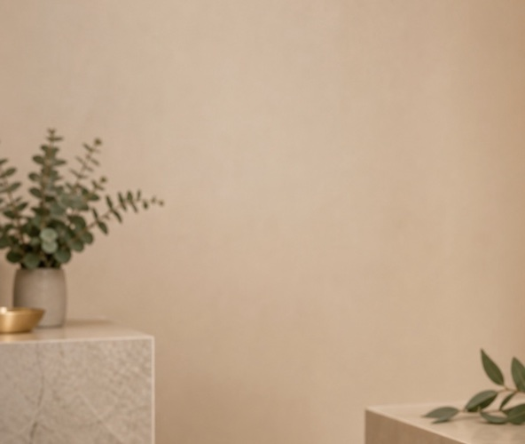

Алина Морозова
Породный стиль и poodle grooming
LUNA PET SPA создан, чтобы уход за питомцем был не стрессом, а понятным, аккуратным и приятным опытом. Каждая процедура строится вокруг комфорта, здоровья и индивидуального подхода.
Мы не работаем по шаблону. Сначала смотрим на состояние шерсти, кожу, возраст, породу и характер питомца. Затем выбираем темп и уход.

Породный стиль и poodle grooming
Кошки и тревожные питомцы
SPA-уход, кожа и шерсть
Чистые инструменты, контроль температуры, аккуратная фиксация и паузы во время процедуры.
Тихая музыка, мягкий свет, приватные зоны и отсутствие хаотичного потока.
Профессиональные средства для чувствительной кожи и разных типов шерсти.
Да, если питомцу так спокойнее. Иногда специалист может предложить короткое ожидание рядом, чтобы снизить тревожность.
Да, но только в мягком темпе и без лишнего давления. Перед визитом уточняем характер и опыт процедур.
Профессиональная косметика под тип шерсти, чувствительность кожи и задачу процедуры.